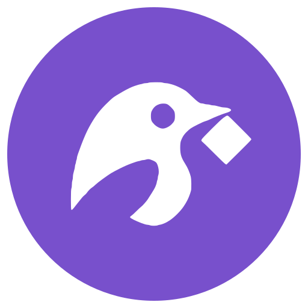
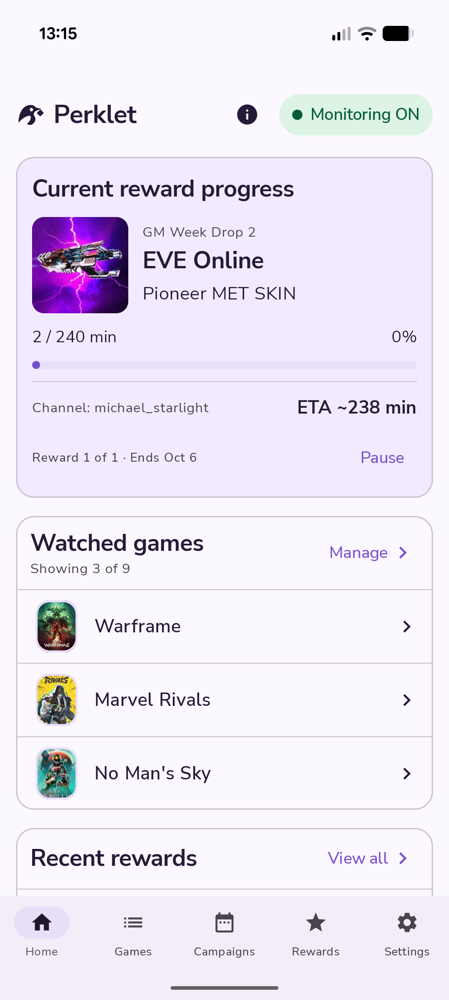

Twitch
For monitoringThis is the account Perklet uses to check your progress and claim Drops.
Your Twitch sign-in is saved in encrypted storage on your phone. You can disconnect it in Settings.

PerkletTwitch Drops companion for Android
Keep track of Twitch Drops on your phone. Pick the games you care about, follow your progress, and let Perklet claim rewards when they’re ready.
For now, use the Google account you joined the test with.

Find active campaigns and see what you can earn in the games you follow.
See how your current Drop is coming along and how much time is left, in the app or its notification.
Look back through your rewards and see what’s been claimed.
Designed to keep battery use low, without playing video on your phone. Battery use varies by device and connection.
How it works
Then turn on monitoring. You can check in or pause it whenever you like.
Sign in on Twitch’s own page and give Perklet permission to connect. Perklet never sees your Twitch password.
Find a game, browse its campaigns, and add it to your watching list. Some rewards need you to link your game account too.
Perklet works through rewards one at a time. Its Android notification shows what’s happening, so you don’t have to keep the app open.
Keep your phone connected. Perklet needs internet access and permission to run in the background. Twitch and each campaign’s rules determine which rewards you can earn.
Your accounts
Twitch is for your Drops. Google keeps your subscription or gifted access linked to you. You manage each connection separately in Settings.
This is the account Perklet uses to check your progress and claim Drops.
Your Twitch sign-in is saved in encrypted storage on your phone. You can disconnect it in Settings.
Sign in with Google to use your subscription or gifted access. It’s optional if you just want to explore the app.
Google sign-in doesn’t give Perklet access to Gmail, Drive or your Google password. Signing in does not start a purchase.
Questions
Our mobile Twitch Drops guide covers where to start, what to check in your inventory and how to troubleshoot stalled progress.
Open Perklet on Google Play with the Google account you joined the test with. The listing may be hidden if you haven’t joined. Trouble getting in? Email perklet.support@gmail.com.
No. You can explore the app without Google sign-in. In versions with subscriptions, sign in when you want to buy one or use gifted access. You still need to connect Twitch to monitor Drops.
Perklet is designed to keep battery use low. It monitors Drops without playing video on your phone. How much it uses depends on your device, connection and background settings.
Some rewards need a linked game account or other requirements from the publisher. Progress and delivery depend on Twitch and the game, so they aren’t something Perklet can guarantee. Campaigns can also change or end.
Read the privacy policy for details about your data, Google sign-in, subscriptions and optional crash reporting. To request deletion, follow the steps on the account and data deletion page. You don’t need access to the app to make a request.
Deleting your Perklet account won’t stop subscription renewals. You’ll need to cancel those separately in Google Play.
Need a hand?
Email us about setup, your account or your data.